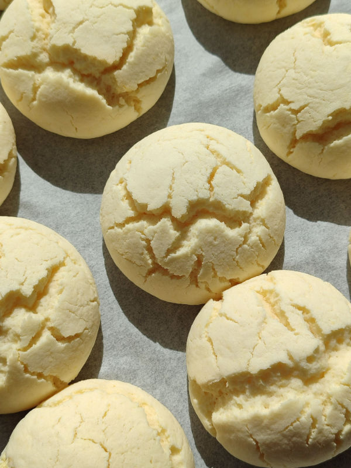
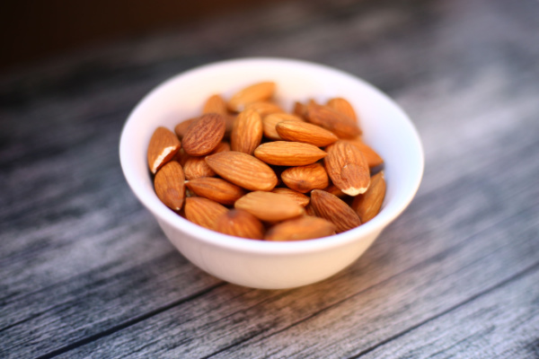
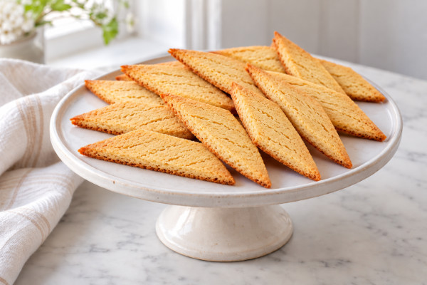
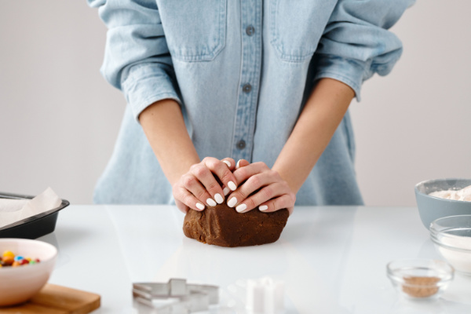
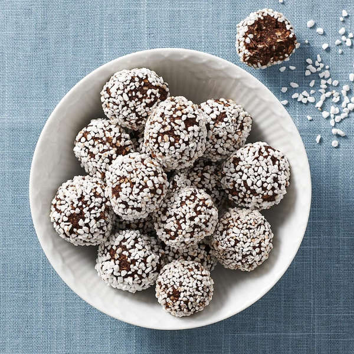
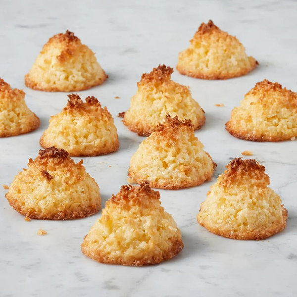

Om kakorna
På den här sidan finns recept på sju småkakor att prova på!
Drömmar

Drömmar är mycket spröda småkakor med mild vaniljsmak som är lätta att baka. Hjorthornssalt gör att kakorna får sin karakteristiskt porösa och ljuvligt frasiga konsistens.
Ger cirka 40-45 kakor.
Ingredienser:
- 100 g smör
- 3 dl strösocker
- 1 dl rapsolja
- 2 tsk vaniljsocker
- 1 tsk hjorthornssalt
- 4 dl vetemjöl
Gör så här:
- Sätt ugnen på 150 °C.
- Rör smör och socker mjukt i en bunke.
- Tillsätt rapsolja lite i taget, under vispningen.
- Blanda vaniljsocker och hjorthornssalt med lite av mjölet och rör ned blandningen i smeten. Tillsätt sedan resten av mjölet.
- Rulla små bollar av degen och lägg dem på plåtar med bakplåtspapper.
- Grädda mitt i ugnen i cirka 15-20 minuter och låt kallna på plåten.
Finska pinnar

Finska pinnar är spröda mördegskakor med mandel och pärlsocker på toppen. Trots namnet är de en välkänd klassiker på svenska kakfat.
Receptet ger cirka 60 kakor.
Ingredienser:
- 200 g smör
- 1 dl strösocker
- 4,5 dl vetemjöl
- 1 tsk vaniljsocker
- 1 dl mandelmjöl
- 1 äggvita
Garnering
- Cirka 1 dl hackad sötmandel
- 2 msk pärlsocker
Gör så här:
- Sätt ugnen på 175°C.
- Blanda mandel, mjöl och socker och arbeta ihop med tärnat smör till en deg. Låt vila i kylskåp ca 30 minuter.
- Dela degen i 8 delar och rulla varje del till en 30 cm lång längd.
- Lägg längderna på en plåt med bakplåtspapper.
- Vispa upp äggvitan lätt och pensla längderna.
- Strö över hackad mandel och pärlsocker och dela längderna i ca 4 cm långa bitar. Sära bitarna lite så att de inte fastnar i varandra.
- Grädda mitt i ugnen i ca 10-12 minuter.
Hallongrottor

Hallongrottor är mördegskakor med en liten grop fylld med ljuvlig hallonsylt. De är både enkla att baka och uppskattade på kakfatet.
Receptet ger cirka 20-24 kakor.
Ingredienser:
- 200 g smör eller margarin
- 1 dl strösocker
- 2 tsk vaniljsocker
- 4,5 dl vetemjöl
- 1 tsk bakpulver
- 1 dl fast hallonsylt
Gör så här:
- Sätt ugnen på 200 °C.
- Arbeta snabbt ihop smör, socker, vaniljsocker, vetemjöl och bakpulver till en deg. Gärna i matberedare.
- Rulla degen till små bollar och lägg dem i små kakformar ca 5 cm i diameter.
- Gör en grop i varje kaka med ett finger eller skaftet på en sked.
- Fyll groparna med hallonsylt.
- Grädda i cirka 12-15 minuter och låt sedan svalna på galler.
Kolasnittar

Kolasnittar är avlånga, lite sega småkakor med smak av sirap och vanilj. De skärs i sneda bitar direkt när de kommer ut ur ugnen.
Receptet ger cirka 20 kakor.
Ingredienser:
- 100 g smör
- 1 dl strösocker
- 2 msk mörk sirap
- 2,5 dl vetemjöl
- 1 tsk bakpulver
- 1 tsk vaniljsocker
Gör så här:
- Sätt ugnen på 175 °C.
- Rör smör, socker och sirap mjukt i en bunke.
- Blanda vetemjöl, bakpulver och vaniljsocker. Arbeta sedan ihop med smörsmeten till en deg.
- Dela degen i två delar och rulla varje del till en längd, cirka 40 cm lång.
- Lägg längderna på en plåt med bakplåtspapper och platta till dem lite.
- Grädda i mitten av ugnen i cirka 12 minuter tills de är gyllenbruna.
- Låt kakorna svalna något och skär längderna i sneda bitar medan de fortfarande är varma.
Schackrutor

Schackrutor är klassiska småkakor med ett dekorativt rutmönster av ljus och chokladsmakande mördeg. Kakorna blir spröda och ser mycket läckra ut på kakfatet. De imponerar med sitt utseende men är väldigt enkla att baka.
Receptet ger cirka 50 kakor.
Ingredienser:
- 200 g osaltat smör
- 1 dl strösocker
- 4,5 dl vetemjöl
Ljus deg
- 2 tsk vaniljsocker
Mörk deg
- 2 msk kakao
Gör så här:
- Ta fram smöret så att det hinner bli rumsvarmt.
- Vispa ihop smör och socker till en jämn smet.
- Tillsätt vetemjöl, lite i taget, och fortsätt röra tills det blir stora smulor.
- Dela degen i två lika stora delar.
- Arbeta in kakaon i den ena delen och vaniljsockret i den andra så att du får en ljus och en mörk deg.
- Dela varje deg i två delar så att du får två ljusa och två mörka delar.
- Rulla delarna till längder och tryck till dem mot bakbordet så att de får platta kanter. Lägg längderna tätt ihop, med två ovanpå de andra, så att de bildar ett schackmönster.
- Låt degen vila i kylskåpet i 1-2 timmar.
- Sätt ugnen på 200 °C.
- Skär längden i cirka 3-4 mm tjocka skivor.
- Lägg kakorna på en plåt med bakplåtspapper och grädda mitt i ugnen i cirka 8-10 minuter.
Chokladbollar

Chokladbollar är ett klassiskt bakverk med smak av kakao och kaffe. De rullas i pärlsocker, kokos eller strössel.
Receptet ger cirka 15-20 chokladbollar.
Ingredienser:
- 100 g smör
- 1 dl strösocker
- 1 msk vaniljsocker
- 3 msk kakao
- 3 dl havregryn
- 3 msk kallt starkt kaffe
- Pärlsocker, kokos eller strösocker till garnering
Gör så här:
- Smält smör och låt det puttra i cirka en minut.
- Blanda socker, vaniljsocker, kakao, havregryn, kaffe och smör med en elvisp.
- Ställ smeten i kylskåpet i cirka 40 minuter.
- Forma smeten till små bollar.
- Rulla bollarna i pärlsocker, kokos eller strössel.
Kokostoppar

Kokostoppar är söta och sega små kakor med smak av kokos. De är enkla att baka och passar bra till kaffet.
Receptet ger cirka 25 kakor.
Ingredienser:
- 50 g smör
- 2 ägg
- 2 dl strösocker
- 200 g riven kokos
- Smaksättning 1 finrivet skal av lime och 50 g choklad
Gör så här:
- Sätt ugnen på 200 °C.
- Lägg bakplåtspapper på en ugnsplåt.
- Smält smöret i en kastrull.
- Blanda ägg, socker, kokos och smält smör i en skål.
- Låt smeten stå i cirka 10 minuter.
- Forma små toppar med hjälp av två teskedar och lägg dem på plåten.
- Grädda mitt i ugnen i cirka 12 minuter tills kakorna fått fin färg.
Källa: ICA, Kokostoppar